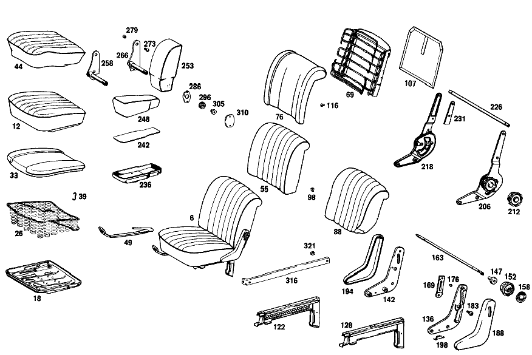

| № | Артикул | Название | Кол. | Примечание | Ограничение |
|---|---|---|---|---|---|
| 6 | A 110 910 89 09 | СИДЕНЬЕ ВОДИТЕЛЯ | 1 | FABRIC; LEFT [008] STATE COLOR AND CHASSIS NUMBER WHEN ORDERING | |
| 12 | A 110 910 95 30 | ПОДУШКА СИДЕНЬЯ | 2 | ТКАНЬ ОБИВКИ | |
| 18 | A 110 910 20 22 | - РАМА ПОДУШКИ | - | ||
| 26 | A 108 910 00 40 | - КОРОБ ПРУЖИНЫ | 2 | ||
| 33 | A 108 914 00 14 | - НАКЛАДКА | - | ||
| 33 | A 108 914 22 14 | - Накладка | 2 | ТКАНЬ ОБИВКИ | |
| 39 | A 000 984 20 61 | - Скоба | 10 | ||
| 44 | A 110 910 78 46 | - ОБИВКА | 2 | ТКАНЬ ОБИВКИ | |
| 49 | A 110 910 81 05 | - Ограничитель | 1 | ЛЕВОЕ СИД., СЛЕВА | |
| 55 | A 110 910 89 32 | - СПИНКА СИДЕНЬЯ | - | ||
| 69 | A 110 910 14 34 | - РАМА СПИНКИ | - | ||
| 76 | A 108 914 00 16 | - НАКЛАДКА | - | FABRIC; LEFT [403] НЕ УСТАНОВЛЕНО | |
| 88 | A 110 910 95 47 | - ОБИВКА | - | ||
| 98 | A 136 988 02 78 | - СКОБА | 4 | [402] БОЛЬШЕ НЕ ПОСТАВЛЯЕТСЯ | |
| 107 | A 110 910 25 39 | - Обшивка | 2 | ТКАНЬ ОБИВКИ | |
| 116 | A 110 987 07 39 | - РЕЗИНОВЫЙ УПОР | 8 | ОБЛИЦОВКА НА СПИНКЕ ВОДИТ. | |
| 122 | A 110 910 89 05 | - НАПРАВЛЯЮЩАЯ СИДЕНЬЯ | 1 | ВНУТРИ СЛЕВА | |
| 128 | A 110 910 93 05 | - НАПРАВЛЯЮЩАЯ СИДЕНЬЯ | 1 | СНАРУЖИ СЛЕВА | |
| 136 | A 110 910 09 55 | - СКОБА СПИНКИ | 2 | ВНИЗУ СЛЕВА | |
| 142 | A 110 910 10 55 | - СКОБА СПИНКИ | 2 | СНИЗУ СПРАВА | |
| 147 | A 110 910 01 73 | - РОЛИК | 4 | ||
| 152 | A 110 910 01 88 | - Маховичок | 2 | ||
| 158 | A 110 910 00 18 | - ПАНЕЛЬ | 2 | ||
| 163 | A 110 910 01 98 | - ВАЛ | 2 | ||
| 169 | A 110 918 01 11 | - ПЛАСТИНА | 2 | СЛЕВА [001] UP TO CHASSIS 108441 EXCEPT FOR, SEE FOOTNOTE 2 [002] 106834, 106835, 106875, 106879, 107174, 107179, 107183, 107186- 107188, 107191, 107193, 107196, 107198, 107199, 107201, 107203- 107206, 107208, 107211- 107214, 107217, 107221, 107224, 107227, 107228, 107230- 107233, 107235, 107236, 107238- 107240, 107242- 107245, 107247, 107250, 107251, 107253, 107256, 107260- 107266, 107270, 107271, 107274, 107275, 107277- 107280, 107282, 107283, 107288, 107289, 107291, 107293, 107295, 107318, 107319, 107322, 107324, 107325, 107327, 107335, 107337, 107347- 107349, 107351, 107355, 107361, 107370, 107386, 107387, 107391, 107392, 107395, 107396, 107403, 107405, 107407, 107409, 107412, 107419, 107425, 107442, 107446, 107451, 107463, 107465, 107467, 107473, 107481, 107483, 107486, 107489, 107490, 107493, 107502, 107509, 107513, 107515- 107517, 107520, 107522, 107540, 107541, 107544, 107545, 107551, 107552, 107554, 107561, 107569- 107571, 107573- 107579, 107587, 107589, 107590, 107595, 107602, 107613, 107624, 107660, 107663, 107664, 107720, 107745, 107763, 107766, 107773, 107775, 107784, 107788, 107790, 107800, 107815, 107819, 107820, 107842, 107847, 107863, 107865, 107867, 107869, 107872, 107873, 107877- 107879, 107881, 107882, 107884, 107886- 107888. | |
| 176 | A 110 919 00 95 | - ПРОКЛАДКА | 4 | ||
| 183 | A 110 984 03 32 | - БОЛТ | 4 | BACKREST TO SEAT ADJUSTMENT BRACKET | |
| 188 | A 110 910 01 54 | - НАКЛАДКА | - | ||
| 194 | A 110 910 03 54 | - НАКЛАДКА | - | ||
| 198 | A 110 988 10 78 | - СКОБА | - | ||
| 206 | A 000 910 43 85 | РЕГУЛИРОВКА СПИНКИ | 1 | с ADJUSTER;FABRIC;SEMI\-FLUTED | |
| 212 | A 000 918 02 26 | - МАХОВИЧОК | - | [403] НЕ УСТАНОВЛЕНО | |
| 218 | A 000 910 44 86 | РЕГУЛИРОВКА СПИНКИ | 1 | СПРАВА, ЛЕВОЕ СИДЕН. | |
| 226 | A 108 918 00 27 | СОЕДИНЕНИЕ | 2 | ||
| 231 | A 000 918 06 96 | ПОДКЛАДКА | 4 | ||
| 236 | A 111 841 02 74 | ЧАШКА | - | FRONT SEAT LESS HEIGHT ADJUSTMENT [403] НЕ УСТАНОВЛЕНО | |
| 242 | A 110 841 07 90 | ОБИВКА | - | ||
| 248 | A 110 910 14 08 | ПОДУШКА ПРОМЕЖУТОЧНАЯ | 1 | RIGHT OUTSIDE CENTRAL | |
| 253 | A 110 970 11 30 | ПОДЛОКОТНИК ОТКИДН. | 1 | ТКАНЬ ОБИВКИ | |
| 258 | A 110 970 01 20 | ПОДШИПНИК | 1 | FRONT SEAT LESS RECLINING SEAT FITTING | |
| 266 | A 110 970 07 20 | ПОДШИПНИК | 1 | FRONT SEAT с RECLINING SEAT FITTING | |
| 273 | A 110 990 04 31 | БОЛТ | 2 | ||
| 279 | A 108 973 00 29 | НАПРАВЛЯЮЩАЯ | 2 | FRONT SEAT FOLDING ARMREST | |
| 286 | A 109 973 00 26 | УПОР | 1 | FRONT SEAT FOLDING ARMREST | |
| 296 | A 109 990 00 50 | ГАЙКА | 1 | ||
| 305 | A 109 990 00 12 | БОЛТ | 1 | ||
| 310 | A 100 973 07 11 | ПЛАСТИНА | - | ||
| 316 | A 110 970 00 15 | ПЛАНКА | 1 | ||
| 321 | A 000 990 83 91 | ГАЙКОДЕРЖАТЕЛЬ | - | ||
| 321 | A 000 990 71 91 | Гайкодержатель | 1 | ||
| 334 | A 110 910 91 09 | СИДЕНЬЕ ВОДИТЕЛЯ | 1 | FABRIC; SEMI\-FLUTED Рулевое управление: Влево [008] STATE COLOR AND CHASSIS NUMBER WHEN ORDERING | |
| 339 | A 110 910 97 30 | - ПОДУШКА СИДЕНЬЯ | 1 | с ADJUSTER;FABRIC;SEMI\-FLUTED Рулевое управление: Влево | |
| 344 | A 110 910 02 22 | РАМА ПОДУШКИ | - | ||
| 348 | A 110 910 75 05 | - ФИКСАТОР | 1 | Рулевое управление: Влево | |
| 352 | A 110 919 00 60 | - РУЧКА | 1 | ||
| 356 | A 110 919 02 27 | - ТЯГА СОЕДИНИТЕЛЬНАЯ | 1 | ||
| 361 | A 110 919 03 27 | - ТЯГА СОЕДИНИТЕЛЬНАЯ | 1 | ||
| 366 | N 101209 120336 | - SUPERSESSION DUMMY | 1 | ||
| 371 | A 110 910 16 40 | - КОРОБ ПРУЖИНЫ | 1 | ||
| 376 | A 110 914 06 14 | - НАКЛАДКА | 1 | ТКАНЬ ОБИВКИ | |
| 381 | A 110 910 82 46 | - ОБИВКА | 1 | ТКАНЬ ОБИВКИ | |
| 386 | A 110 910 91 32 | - СПИНКА СИДЕНЬЯ | 1 | FABRIC; SEMI\-FLUTED [008] STATE COLOR AND CHASSIS NUMBER WHEN ORDERING | |
| 391 | A 110 910 08 34 | - РАМА СПИНКИ | 1 | ||
| 396 | A 110 910 03 56 | - СКОБА СПИНКИ | 1 | СЛЕВА | |
| 401 | A 110 910 01 41 | - КОРОБ ПРУЖИНЫ | 1 | СЛЕВА | |
| 406 | A 110 910 02 41 | - КОРОБ ПРУЖИНЫ | 1 | СПРАВА | |
| 411 | A 110 914 05 16 | - НАКЛАДКА | 1 | ТКАНЬ ОБИВКИ | |
| 416 | A 000 984 20 61 | - Скоба | 44 | ||
| 421 | A 110 910 97 47 | - ОБИВКА | 1 | ТКАНЬ ОБИВКИ [402] БОЛЬШЕ НЕ ПОСТАВЛЯЕТСЯ | |
| 426 | A 110 910 07 39 | - Обшивка | 1 | PLASTIC FOIL | |
| 431 | A 000 990 25 31 | - БОЛТ | - | ||
| 431 | A 108 990 00 30 | - БОЛТ | 4 | СПИНКА НА КАРКАСЕ СИД. | |
| 436 | A 110 910 97 05 | - НАПРАВЛЯЮЩАЯ СИДЕНЬЯ | 1 | СНАРУЖИ СЛЕВА [402] БОЛЬШЕ НЕ ПОСТАВЛЯЕТСЯ | |
| 441 | A 110 910 01 36 | - РЕГУЛИРОВКА СИДЕНЬЯ | 1 | ВНУТРИ СЛЕВА | |
| 446 | A 110 990 04 20 | БОЛТ | 3 | СИД. ВОДИТ. НА ТРАВЕРСЕ | |
| 452 | A 000 910 46 86 | - РЕГУЛИРОВКА СПИНКИ | 1 | БЕЗ МАХОВИЧКА, СПРАВА Рулевое управление: Влево | |
| 456 | A 000 910 41 85 | - РЕГУЛИРОВКА СПИНКИ | 1 | с HANDWHEEL,LEFT Рулевое управление: Вправо | |
| 463 | A 000 918 02 26 | - МАХОВИЧОК | - | ||
| 467 | A 111 918 03 27 | - СОЕДИНЕНИЕ | 1 | ||
| 476 | A 110 918 01 33 | ПЛАНКА | 2 | ||
| A 110 910 90 09 | СИДЕНЬЕ ВОДИТЕЛЯ | 1 | FABRIC; RIGHT [008] STATE COLOR AND CHASSIS NUMBER WHEN ORDERING | ||
| A 110 910 97 09 | СИДЕНЬЕ ВОДИТЕЛЯ | 1 | LEFT; LEATHER [008] STATE COLOR AND CHASSIS NUMBER WHEN ORDERING | ||
| A 110 910 98 09 | СИДЕНЬЕ ВОДИТЕЛЯ | 1 | RIGHT;LEATHER [008] STATE COLOR AND CHASSIS NUMBER WHEN ORDERING | ||
| A 110 910 95 09 | СИДЕНЬЕ ВОДИТЕЛЯ | 1 | СЛЕВА, ИСКУССТ. КОЖА [008] STATE COLOR AND CHASSIS NUMBER WHEN ORDERING | ||
| A 110 910 96 09 | СИДЕНЬЕ ВОДИТЕЛЯ | 1 | СПРАВА; ИСК. КОЖА [008] STATE COLOR AND CHASSIS NUMBER WHEN ORDERING | ||
| A 110 910 07 31 | - ПОДУШКА СИДЕНЬЯ | 2 | КОЖ. ОБИВКА | ||
| A 110 910 08 31 | - ПОДУШКА СИДЕНЬЯ | 2 | ИСКУССТВ. КОЖА | ||
| A 115 910 43 22 | - РАМА ПОДУШКИ | 2 | |||
| A 110 914 08 14 | - НАКЛАДКА | 2 | КОЖ. ОБИВКА | ||
| A 110 914 07 14 | - НАКЛАДКА | - | |||
| A 108 914 22 14 | - Накладка | 2 | ИСКУССТВ. КОЖА | ||
| A 110 910 88 46 | - ОБИВКА | 2 | КОЖ. ОБИВКА | ||
| A 110 910 85 46 | - ОБИВКА | - | |||
| A 110 910 93 46 | - ОБИВКА | 2 | ИСКУССТВ. КОЖА [402] БОЛЬШЕ НЕ ПОСТАВЛЯЕТСЯ | ||
| A 000 984 20 61 | - Скоба | 22 | |||
| A 110 910 82 05 | - Ограничитель | 1 | ПРАВ. СИДЕНЬЕ, СПРАВА | ||
| A 110 910 17 33 | - СПИНКА СИДЕНЬЯ | - | [415] ПРИМЕЧ. ПО ЗАМЕНЕ ПРИМЕНИМО ТОЛЬКО ДЛЯ СТОЯЩИХ РЯДОМ ПОЗИЦИЙ [001] UP TO CHASSIS 108441 EXCEPT FOR, SEE FOOTNOTE 2 [002] 106834, 106835, 106875, 106879, 107174, 107179, 107183, 107186- 107188, 107191, 107193, 107196, 107198, 107199, 107201, 107203- 107206, 107208, 107211- 107214, 107217, 107221, 107224, 107227, 107228, 107230- 107233, 107235, 107236, 107238- 107240, 107242- 107245, 107247, 107250, 107251, 107253, 107256, 107260- 107266, 107270, 107271, 107274, 107275, 107277- 107280, 107282, 107283, 107288, 107289, 107291, 107293, 107295, 107318, 107319, 107322, 107324, 107325, 107327, 107335, 107337, 107347- 107349, 107351, 107355, 107361, 107370, 107386, 107387, 107391, 107392, 107395, 107396, 107403, 107405, 107407, 107409, 107412, 107419, 107425, 107442, 107446, 107451, 107463, 107465, 107467, 107473, 107481, 107483, 107486, 107489, 107490, 107493, 107502, 107509, 107513, 107515- 107517, 107520, 107522, 107540, 107541, 107544, 107545, 107551, 107552, 107554, 107561, 107569- 107571, 107573- 107579, 107587, 107589, 107590, 107595, 107602, 107613, 107624, 107660, 107663, 107664, 107720, 107745, 107763, 107766, 107773, 107775, 107784, 107788, 107790, 107800, 107815, 107819, 107820, 107842, 107847, 107863, 107865, 107867, 107869, 107872, 107873, 107877- 107879, 107881, 107882, 107884, 107886- 107888. | ||
| A 110 910 37 33 | - СПИНКА СИДЕНЬЯ | 1 | СЛЕВА | ||
| A 110 910 90 32 | - СПИНКА СИДЕНЬЯ | - | |||
| A 110 910 18 33 | - СПИНКА СИДЕНЬЯ | - | [415] ПРИМЕЧ. ПО ЗАМЕНЕ ПРИМЕНИМО ТОЛЬКО ДЛЯ СТОЯЩИХ РЯДОМ ПОЗИЦИЙ [001] UP TO CHASSIS 108441 EXCEPT FOR, SEE FOOTNOTE 2 [002] 106834, 106835, 106875, 106879, 107174, 107179, 107183, 107186- 107188, 107191, 107193, 107196, 107198, 107199, 107201, 107203- 107206, 107208, 107211- 107214, 107217, 107221, 107224, 107227, 107228, 107230- 107233, 107235, 107236, 107238- 107240, 107242- 107245, 107247, 107250, 107251, 107253, 107256, 107260- 107266, 107270, 107271, 107274, 107275, 107277- 107280, 107282, 107283, 107288, 107289, 107291, 107293, 107295, 107318, 107319, 107322, 107324, 107325, 107327, 107335, 107337, 107347- 107349, 107351, 107355, 107361, 107370, 107386, 107387, 107391, 107392, 107395, 107396, 107403, 107405, 107407, 107409, 107412, 107419, 107425, 107442, 107446, 107451, 107463, 107465, 107467, 107473, 107481, 107483, 107486, 107489, 107490, 107493, 107502, 107509, 107513, 107515- 107517, 107520, 107522, 107540, 107541, 107544, 107545, 107551, 107552, 107554, 107561, 107569- 107571, 107573- 107579, 107587, 107589, 107590, 107595, 107602, 107613, 107624, 107660, 107663, 107664, 107720, 107745, 107763, 107766, 107773, 107775, 107784, 107788, 107790, 107800, 107815, 107819, 107820, 107842, 107847, 107863, 107865, 107867, 107869, 107872, 107873, 107877- 107879, 107881, 107882, 107884, 107886- 107888. | ||
| A 110 910 38 33 | - СПИНКА СИДЕНЬЯ | 1 | СПРАВА | ||
| A 110 910 01 33 | - СПИНКА СИДЕНЬЯ | - | |||
| A 110 910 23 33 | - СПИНКА СИДЕНЬЯ | 1 | ORTHOPAEDIC;FABRIC;LEFT | ||
| A 110 910 02 33 | - СПИНКА СИДЕНЬЯ | - | |||
| A 110 910 24 33 | - СПИНКА СИДЕНЬЯ | 1 | ORTHOPAEDIC;FABRIC;RIGHT | ||
| A 110 910 95 32 | - СПИНКА СИДЕНЬЯ | - | |||
| A 110 910 19 33 | - СПИНКА СИДЕНЬЯ | 1 | FABRIC; LEFT | ||
| A 110 910 96 32 | - СПИНКА СИДЕНЬЯ | - | |||
| A 110 910 20 33 | - СПИНКА СИДЕНЬЯ | 1 | FABRIC; RIGHT | ||
| A 110 910 05 33 | - СПИНКА СИДЕНЬЯ | - | |||
| A 110 910 27 33 | - СПИНКА СИДЕНЬЯ | 1 | ORTHOPAEDIC;FABRIC;LEFT | ||
| A 110 910 06 33 | - СПИНКА СИДЕНЬЯ | - | |||
| A 110 910 28 33 | - СПИНКА СИДЕНЬЯ | 1 | ORTHOPAEDIC;FABRIC;RIGHT | ||
| A 110 910 93 32 | - СПИНКА СИДЕНЬЯ | - | |||
| A 110 910 21 33 | - СПИНКА СИДЕНЬЯ | 1 | СЛЕВА, ИСКУССТ. КОЖА | ||
| A 110 910 94 32 | - СПИНКА СИДЕНЬЯ | - | |||
| A 110 910 22 33 | - СПИНКА СИДЕНЬЯ | 1 | СПРАВА; ИСК. КОЖА | ||
| A 110 910 03 33 | - СПИНКА СИДЕНЬЯ | - | |||
| A 110 910 25 33 | - СПИНКА СИДЕНЬЯ | 1 | ORTHOPAEDIC, LEFT IMITATION LEATHER TRIM | ||
| A 110 910 04 33 | - СПИНКА СИДЕНЬЯ | - | |||
| A 110 910 26 33 | - СПИНКА СИДЕНЬЯ | 1 | ORTHOPAEDIC, RIGHT IMITATION LEATHER TRIM | ||
| A 110 910 19 34 | - РАМА СПИНКИ | - | [001] UP TO CHASSIS 108441 EXCEPT FOR, SEE FOOTNOTE 2 [002] 106834, 106835, 106875, 106879, 107174, 107179, 107183, 107186- 107188, 107191, 107193, 107196, 107198, 107199, 107201, 107203- 107206, 107208, 107211- 107214, 107217, 107221, 107224, 107227, 107228, 107230- 107233, 107235, 107236, 107238- 107240, 107242- 107245, 107247, 107250, 107251, 107253, 107256, 107260- 107266, 107270, 107271, 107274, 107275, 107277- 107280, 107282, 107283, 107288, 107289, 107291, 107293, 107295, 107318, 107319, 107322, 107324, 107325, 107327, 107335, 107337, 107347- 107349, 107351, 107355, 107361, 107370, 107386, 107387, 107391, 107392, 107395, 107396, 107403, 107405, 107407, 107409, 107412, 107419, 107425, 107442, 107446, 107451, 107463, 107465, 107467, 107473, 107481, 107483, 107486, 107489, 107490, 107493, 107502, 107509, 107513, 107515- 107517, 107520, 107522, 107540, 107541, 107544, 107545, 107551, 107552, 107554, 107561, 107569- 107571, 107573- 107579, 107587, 107589, 107590, 107595, 107602, 107613, 107624, 107660, 107663, 107664, 107720, 107745, 107763, 107766, 107773, 107775, 107784, 107788, 107790, 107800, 107815, 107819, 107820, 107842, 107847, 107863, 107865, 107867, 107869, 107872, 107873, 107877- 107879, 107881, 107882, 107884, 107886- 107888. | ||
| A 110 910 21 34 | - РАМА СПИНКИ | 1 | |||
| A 108 914 01 16 | - НАКЛАДКА | - | |||
| A 108 914 11 16 | - НАКЛАДКА | - | |||
| A 108 914 02 16 | - НАКЛАДКА | - | |||
| A 108 914 12 16 | - НАКЛАДКА | - | |||
| A 115 914 02 16 | - НАКЛАДКА | 1 | СПРАВА | ||
| A 110 914 11 16 | - НАКЛАДКА | 1 | LEFT; LEATHER | ||
| A 110 914 12 16 | - НАКЛАДКА | 1 | RIGHT;LEATHER | ||
| A 110 914 09 16 | - НАКЛАДКА | 1 | СЛЕВА, ИСКУССТ. КОЖА | ||
| A 110 914 10 16 | - НАКЛАДКА | 1 | СПРАВА; ИСК. КОЖА [402] БОЛЬШЕ НЕ ПОСТАВЛЯЕТСЯ | ||
| A 108 914 05 16 | - НАКЛАДКА | 1 | ORTHOPAEDIC BACKREST;FABRIC;LEFT | ||
| A 108 914 06 16 | - НАКЛАДКА | 1 | ORTHOPAEDIC BACKREST;FABRIC;RIGHT | ||
| A 108 914 09 16 | - НАКЛАДКА | 1 | ORTHOPAEDIC BACKREST;LEATHER,LEFT | ||
| A 108 914 10 16 | - НАКЛАДКА | 1 | ORTHOPAEDIC BACKREST;LEATHER;RIGHT | ||
| A 108 914 07 16 | - НАКЛАДКА | 1 | ORTHOPAEDIC BACKREST;IMITATION LEATHER ;LEFT | ||
| A 108 914 08 16 | - НАКЛАДКА | 1 | ORTHOPAEDIC BACKREST;IMITATION LEATHER ;RIGHT | ||
| A 120 910 00 75 | - ВСТАВКА ОБИВКИ | 2 | ОРТОПЕДИЧ. СПИНКА | ||
| A 000 988 01 55 | - ЗАСТЕЖКА | 4 | ОРТОПЕДИЧ. СПИНКА | ||
| A 110 988 00 53 | - ПЕТЛЯ | 4 | ОРТОПЕДИЧ. СПИНКА | ||
| N 007331 004232 | - Заклепка | 8 | [402] БОЛЬШЕ НЕ ПОСТАВЛЯЕТСЯ | ||
| A 000 984 20 61 | - Скоба | 46 | |||
| A 110 910 43 93 | - ОБИВКА | 1 | FABRIC; LEFT | ||
| A 110 910 96 47 | - ОБИВКА | - | |||
| A 110 910 44 93 | - ОБИВКА | 1 | FABRIC; RIGHT | ||
| A 110 910 03 93 | - ОБИВКА | - | |||
| A 110 910 45 93 | - ОБИВКА | 1 | LEFT; LEATHER | ||
| A 110 910 04 93 | - ОБИВКА | - | |||
| A 110 910 46 93 | - ОБИВКА | 1 | RIGHT, RIGHT FRONT SEAT BACKREST | ||
| A 110 910 01 93 | - ОБИВКА | - | |||
| A 110 910 47 93 | - ОБИВКА | 1 | СЛЕВА, ИСКУССТ. КОЖА [402] БОЛЬШЕ НЕ ПОСТАВЛЯЕТСЯ | ||
| A 110 910 02 93 | - ОБИВКА | - | |||
| A 110 910 48 93 | - ОБИВКА | 1 | СПРАВА; ИСК. КОЖА [402] БОЛЬШЕ НЕ ПОСТАВЛЯЕТСЯ | ||
| A 110 910 21 93 | - ОБИВКА | - | |||
| A 110 910 55 93 | - ОБИВКА | 1 | ORTHOPAEDIC BACKREST;FABRIC;LEFT | ||
| A 110 910 22 93 | - ОБИВКА | - | |||
| A 110 910 56 93 | - ОБИВКА | 1 | ORTHOPAEDIC BACKREST;FABRIC;RIGHT | ||
| A 110 910 23 93 | - ОБИВКА | - | |||
| A 110 910 53 93 | - ОБИВКА | 1 | ORTHOPAEDIC BACKREST;LEATHER,LEFT | ||
| A 110 910 24 93 | - ОБИВКА | - | |||
| A 110 910 54 93 | - ОБИВКА | 1 | ORTHOPAEDIC BACKREST;LEATHER;RIGHT | ||
| A 110 910 25 93 | - ОБИВКА | - | |||
| A 110 910 51 93 | - ОБИВКА | 1 | ORTHOPAEDIC BACKREST;IMITATION LEATHER ;LEFT | ||
| A 110 910 26 93 | - ОБИВКА | - | |||
| A 110 910 52 93 | - ОБИВКА | 1 | ORTHOPAEDIC BACKREST;IMITATION LEATHER ;RIGHT | ||
| A 110 910 29 39 | - Обшивка | 2 | КОЖ. ОБИВКА | ||
| A 110 910 30 39 | - Обшивка | 2 | ИСКУССТВ. КОЖА | ||
| A 110 910 31 39 | - Обшивка | 2 | ORTHOPAEDIC BACKREST;FABRIC | ||
| A 110 910 33 39 | - Обшивка | 2 | ORTHOPAEDIC BACKREST;LEATHER | ||
| A 110 910 32 39 | - Обшивка | 2 | ORTHOPAEDIC BACKREST;IMITATION LEATHER | ||
| H 00 798 300 32 21 | - ТРУБКА ПОДШИПНИКА | 4 | ОБЛИЦОВКА НА СПИНКЕ ВОДИТ. | ||
| A 000 985 06 62 | - Диск | 4 | ОБЛИЦОВКА НА СПИНКЕ ВОДИТ. | ||
| A 110 910 90 05 | - НАПРАВЛЯЮЩАЯ СИДЕНЬЯ | 1 | ВНУТРИ СПРАВА | ||
| A 110 910 94 05 | - НАПРАВЛЯЮЩАЯ СИДЕНЬЯ | 1 | СНАРУЖИ СПРАВА [402] БОЛЬШЕ НЕ ПОСТАВЛЯЕТСЯ | ||
| N 007987 004120 | - БОЛТ | 2 | |||
| N 006797 004331 | - Зубчатая шайба | 2 | |||
| N 006799 009001 | - Стопорная шайба | 4 | |||
| A 110 918 02 11 | - ПЛАСТИНА | 2 | СПРАВА [001] UP TO CHASSIS 108441 EXCEPT FOR, SEE FOOTNOTE 2 [002] 106834, 106835, 106875, 106879, 107174, 107179, 107183, 107186- 107188, 107191, 107193, 107196, 107198, 107199, 107201, 107203- 107206, 107208, 107211- 107214, 107217, 107221, 107224, 107227, 107228, 107230- 107233, 107235, 107236, 107238- 107240, 107242- 107245, 107247, 107250, 107251, 107253, 107256, 107260- 107266, 107270, 107271, 107274, 107275, 107277- 107280, 107282, 107283, 107288, 107289, 107291, 107293, 107295, 107318, 107319, 107322, 107324, 107325, 107327, 107335, 107337, 107347- 107349, 107351, 107355, 107361, 107370, 107386, 107387, 107391, 107392, 107395, 107396, 107403, 107405, 107407, 107409, 107412, 107419, 107425, 107442, 107446, 107451, 107463, 107465, 107467, 107473, 107481, 107483, 107486, 107489, 107490, 107493, 107502, 107509, 107513, 107515- 107517, 107520, 107522, 107540, 107541, 107544, 107545, 107551, 107552, 107554, 107561, 107569- 107571, 107573- 107579, 107587, 107589, 107590, 107595, 107602, 107613, 107624, 107660, 107663, 107664, 107720, 107745, 107763, 107766, 107773, 107775, 107784, 107788, 107790, 107800, 107815, 107819, 107820, 107842, 107847, 107863, 107865, 107867, 107869, 107872, 107873, 107877- 107879, 107881, 107882, 107884, 107886- 107888. | ||
| A 110 918 05 11 | - ПЛАСТИНА | 2 | СЛЕВА [005] FROM CHASSIS 108442 ALSO INSTALLED ON, SEE FOOTNOTE 2 [002] 106834, 106835, 106875, 106879, 107174, 107179, 107183, 107186- 107188, 107191, 107193, 107196, 107198, 107199, 107201, 107203- 107206, 107208, 107211- 107214, 107217, 107221, 107224, 107227, 107228, 107230- 107233, 107235, 107236, 107238- 107240, 107242- 107245, 107247, 107250, 107251, 107253, 107256, 107260- 107266, 107270, 107271, 107274, 107275, 107277- 107280, 107282, 107283, 107288, 107289, 107291, 107293, 107295, 107318, 107319, 107322, 107324, 107325, 107327, 107335, 107337, 107347- 107349, 107351, 107355, 107361, 107370, 107386, 107387, 107391, 107392, 107395, 107396, 107403, 107405, 107407, 107409, 107412, 107419, 107425, 107442, 107446, 107451, 107463, 107465, 107467, 107473, 107481, 107483, 107486, 107489, 107490, 107493, 107502, 107509, 107513, 107515- 107517, 107520, 107522, 107540, 107541, 107544, 107545, 107551, 107552, 107554, 107561, 107569- 107571, 107573- 107579, 107587, 107589, 107590, 107595, 107602, 107613, 107624, 107660, 107663, 107664, 107720, 107745, 107763, 107766, 107773, 107775, 107784, 107788, 107790, 107800, 107815, 107819, 107820, 107842, 107847, 107863, 107865, 107867, 107869, 107872, 107873, 107877- 107879, 107881, 107882, 107884, 107886- 107888. | ||
| A 110 918 06 11 | - ПЛАСТИНА | 2 | СПРАВА [005] FROM CHASSIS 108442 ALSO INSTALLED ON, SEE FOOTNOTE 2 [002] 106834, 106835, 106875, 106879, 107174, 107179, 107183, 107186- 107188, 107191, 107193, 107196, 107198, 107199, 107201, 107203- 107206, 107208, 107211- 107214, 107217, 107221, 107224, 107227, 107228, 107230- 107233, 107235, 107236, 107238- 107240, 107242- 107245, 107247, 107250, 107251, 107253, 107256, 107260- 107266, 107270, 107271, 107274, 107275, 107277- 107280, 107282, 107283, 107288, 107289, 107291, 107293, 107295, 107318, 107319, 107322, 107324, 107325, 107327, 107335, 107337, 107347- 107349, 107351, 107355, 107361, 107370, 107386, 107387, 107391, 107392, 107395, 107396, 107403, 107405, 107407, 107409, 107412, 107419, 107425, 107442, 107446, 107451, 107463, 107465, 107467, 107473, 107481, 107483, 107486, 107489, 107490, 107493, 107502, 107509, 107513, 107515- 107517, 107520, 107522, 107540, 107541, 107544, 107545, 107551, 107552, 107554, 107561, 107569- 107571, 107573- 107579, 107587, 107589, 107590, 107595, 107602, 107613, 107624, 107660, 107663, 107664, 107720, 107745, 107763, 107766, 107773, 107775, 107784, 107788, 107790, 107800, 107815, 107819, 107820, 107842, 107847, 107863, 107865, 107867, 107869, 107872, 107873, 107877- 107879, 107881, 107882, 107884, 107886- 107888. | ||
| N 007987 006153 | - БОЛТ | 4 | |||
| N 900055 018001 | - Пружинная шайба | 4 | BACKREST TO SEAT ADJUSTMENT BRACKET | ||
| A 094 990 57 07 | - Зубчатая шайба | 4 | BACKREST TO SEAT ADJUSTMENT BRACKET [402] БОЛЬШЕ НЕ ПОСТАВЛЯЕТСЯ | ||
| A 000 990 13 30 | - БОЛТ | - | |||
| A 110 990 00 30 | - БОЛТ | - | |||
| A 108 990 00 30 | - БОЛТ | 8 | |||
| A 115 913 05 28 | - ПАНЕЛЬ | - | |||
| A 114 913 01 28 | - ПАНЕЛЬ | 1 | СНАРУЖИ СЛЕВА | ||
| A 110 910 02 54 | - НАКЛАДКА | - | |||
| A 115 913 06 28 | - ПАНЕЛЬ | 1 | СНАРУЖИ СПРАВА | ||
| A 115 913 07 28 | - ПАНЕЛЬ | 1 | ВНУТРИ СЛЕВА | ||
| A 110 910 04 54 | - НАКЛАДКА | - | |||
| A 115 913 08 28 | - ПАНЕЛЬ | 1 | ВНУТРИ СПРАВА | ||
| A 000 983 00 98 | - ПОРОЛОН | - | |||
| A 000 983 35 98 | - ПОРОЛОН | 4 | 5 MM [404] ЗАКАЗЫВАТЬ ПОГОННЫМИ МЕТРАМИ | ||
| A 110 988 11 78 | - СКОБА | 4 | |||
| A 000 990 15 21 | - БОЛТ | - | |||
| N 914028 006100 | - Винт с неспадающей шайбой | - | |||
| A 004 990 16 01 | - болт | 12 | |||
| N 000933 008131 | Винт | - | |||
| N 304017 008016 | Винт с 6-гранной головкой | 4 | СИД. ВОДИТ. НА ТРАВЕРСЕ; M8X16 | ||
| N 912004 008102 | Пружинное кольцо | 4 | СИД. ВОДИТ. НА ТРАВЕРСЕ | ||
| A 000 990 70 91 | ГАЙКОДЕРЖАТЕЛЬ | - | |||
| A 001 990 28 91 | Вставная гайка | 2 | СИД. ВОДИТ. НА ТРАВЕРСЕ | ||
| N 000933 006130 | Винт | 4 | DRIVER'S SEAT TO FLOOR | ||
| A 094 990 68 10 | Пружинное кольцо | 4 | DRIVER'S SEAT TO FLOOR | ||
| A 000 990 48 91 | ВСТАВНАЯ ГАЙКА | - | [415] ПРИМЕЧ. ПО ЗАМЕНЕ ПРИМЕНИМО ТОЛЬКО ДЛЯ СТОЯЩИХ РЯДОМ ПОЗИЦИЙ | ||
| A 000 990 99 91 | Гайкодержатель | 4 | DRIVER'S SEAT TO FLOOR | ||
| A 110 919 03 33 | РАСПОРН. ТРУБКА | - | |||
| A 110 919 00 17 | ПРОСТАВКА | - | |||
| A 116 919 00 17 | ПРОСТАВКА | 2 | DRIVER'S SEAT TO FLOOR | ||
| N 000931 006084 | Винт | - | |||
| N 304017 006027 | Винт с 6-гранной головкой | 2 | DRIVER'S SEAT TO FLOOR; M6X45 | ||
| A 094 990 68 10 | Пружинное кольцо | 2 | DRIVER'S SEAT TO FLOOR | ||
| A 000 990 87 91 | ГАЙКОДЕРЖАТЕЛЬ | - | |||
| A 000 990 71 91 | Гайкодержатель | 2 | |||
| A 110 919 03 20 | ПАНЕЛЬ | 1 | СНАРУЖИ СЛЕВА СЗАДИ [008] STATE COLOR AND CHASSIS NUMBER WHEN ORDERING | ||
| A 110 919 04 20 | ПАНЕЛЬ | 1 | СНАРУЖИ СПРАВА СЗАДИ [008] STATE COLOR AND CHASSIS NUMBER WHEN ORDERING | ||
| A 110 919 05 20 | ПАНЕЛЬ | 1 | ВНУТРИ СЗАДИ СЛЕВА [008] STATE COLOR AND CHASSIS NUMBER WHEN ORDERING | ||
| A 110 919 06 20 | ПАНЕЛЬ | 1 | ВНУТРИ СЗАДИ СПРАВА [008] STATE COLOR AND CHASSIS NUMBER WHEN ORDERING | ||
| A 110 910 15 06 | НАКЛАДКА ПОДУШКИ СИДЕНЬЯ | 2 | |||
| A 110 910 23 06 | НАКЛАДКА ПОДУШКИ СИДЕНЬЯ | 2 | КОЖ. ОБИВКА | ||
| A 110 910 24 06 | НАКЛАДКА ПОДУШКИ СИДЕНЬЯ | 2 | ИСКУССТВ. КОЖА | ||
| A 110 910 15 07 | СПИНКА СИДЕНЬЯ | - | |||
| A 108 910 07 07 | СПИНКА СИДЕНЬЯ | 1 | СЛЕВА | ||
| A 110 910 35 07 | СПИНКА СИДЕНЬЯ | - | |||
| A 108 910 09 07 | СПИНКА СИДЕНЬЯ | 1 | LEFT; LEATHER | ||
| A 110 910 37 07 | СПИНКА СИДЕНЬЯ | - | |||
| A 108 910 11 07 | СПИНКА СИДЕНЬЯ | 1 | СЛЕВА, ИСКУССТ. КОЖА [402] БОЛЬШЕ НЕ ПОСТАВЛЯЕТСЯ | ||
| A 110 910 16 07 | СПИНКА СИДЕНЬЯ | - | |||
| A 108 910 08 07 | СПИНКА СИДЕНЬЯ | 1 | СПРАВА | ||
| A 110 910 36 07 | СПИНКА СИДЕНЬЯ | - | |||
| A 108 910 10 07 | СПИНКА СИДЕНЬЯ | 1 | RIGHT, RIGHT FRONT SEAT BACKREST | ||
| A 110 910 38 07 | СПИНКА СИДЕНЬЯ | - | |||
| A 108 910 12 07 | СПИНКА СИДЕНЬЯ | 1 | ИСКУССТ.КОЖА;СПРАВА [402] БОЛЬШЕ НЕ ПОСТАВЛЯЕТСЯ | ||
| A 110 910 29 07 | СПИНКА СИДЕНЬЯ | - | |||
| A 108 910 01 07 | СПИНКА СИДЕНЬЯ | 1 | ОРТОПЕДИЧ. СПИНКА, СЛЕВА | ||
| A 110 910 30 07 | СПИНКА СИДЕНЬЯ | - | |||
| A 108 910 02 07 | СПИНКА СИДЕНЬЯ | 1 | ОРТОПЕДИЧ. СПИНКА, СПРАВА | ||
| A 110 910 33 07 | СПИНКА СИДЕНЬЯ | - | |||
| A 108 910 05 07 | СПИНКА СИДЕНЬЯ | 1 | ОРТОПЕДИЧ. СПИНКА, СЛЕВА | ||
| A 110 910 34 07 | СПИНКА СИДЕНЬЯ | - | |||
| A 108 910 06 07 | СПИНКА СИДЕНЬЯ | 1 | ОРТОПЕДИЧ. СПИНКА, СПРАВА | ||
| A 110 910 31 07 | СПИНКА СИДЕНЬЯ | - | |||
| A 108 910 03 07 | СПИНКА СИДЕНЬЯ | 1 | ОРТОПЕДИЧ. СПИНКА, СЛЕВА | ||
| A 110 910 32 07 | СПИНКА СИДЕНЬЯ | - | |||
| A 108 910 04 07 | СПИНКА СИДЕНЬЯ | 1 | ОРТОПЕДИЧ. СПИНКА, СПРАВА RECLINING SEAT FITTINGS [013] СПЕЦ.ПОЖЕЛАНИЕ | ||
| A 108 910 01 80 | РЕГУЛИРОВКА СПИНКИ | 1 | СЛЕВА | ||
| A 108 910 02 80 | РЕГУЛИРОВКА СПИНКИ | 1 | СПРАВА | ||
| A 000 910 44 85 | РЕГУЛИРОВКА СПИНКИ | 1 | СПРАВА, ПРАВОЕ СИДЕН. | ||
| A 000 918 03 26 | - Маховичок | 2 | |||
| A 000 910 43 86 | РЕГУЛИРОВКА СПИНКИ | 1 | СЛЕВА, ПРАВ. СИД. | ||
| N 000088 006117 | БОЛТ | 8 | RECLINING SEAT FITTING TO FRONT SEAT BACKREST | ||
| N 001473 003004 | ПРОСЕЧНОЙ ШТИФТ | 4 | |||
| A 000 990 27 31 | БОЛТ | 8 | RECLINING SEAT FITTING TO FRONT SEAT CUSHION | ||
| A 108 841 01 74 | ЧАШКА | 1 | FRONT SEAT LESS HEIGHT ADJUSTMENT | ||
| A 110 840 01 74 | ЧАШКА | - | |||
| A 108 841 02 74 | ЧАШКА | 1 | ПРИВОД КП НА ЦЕНТР. КОНС. | ||
| A 000 987 24 41 | Эластомерная шайба | - | [403] НЕ УСТАНОВЛЕНО | ||
| A 108 840 00 75 | НАСТИЛ | 1 | [008] STATE COLOR AND CHASSIS NUMBER WHEN ORDERING | ||
| A 112 840 03 75 | НАСТИЛ | - | |||
| A 109 841 01 90 | ОБИВКА | 1 | ПРИВОД КП НА ЦЕНТР. КОНС. [008] STATE COLOR AND CHASSIS NUMBER WHEN ORDERING | ||
| N 007983 004225 | САМОРЕЗ | 2 | TRAY TO TUNNEL | ||
| N 007983 004270 | САМОРЕЗ | 2 | ПРИВОД КП НА ЦЕНТР. КОНС. | ||
| A 000 994 33 45 | предохранитель | - | |||
| A 140 994 10 45 | предохранитель | 2 | TRAY TO TUNNEL | ||
| A 110 910 12 08 | ПОДУШКА ПРОМЕЖУТОЧНАЯ | 1 | ИСКУССТВ. КОЖА | ||
| A 110 910 06 08 | ПОДУШКА ПРОМЕЖУТОЧНАЯ | 1 | КОЖ. ОБИВКА | ||
| A 110 910 08 08 | - ПОДУШКА ПРОМЕЖУТОЧНАЯ | 1 | COMPLETE,BUT LESS COVER CENTRAL FOLDING ARMREST [013] СПЕЦ.ПОЖЕЛАНИЕ | ||
| A 110 970 21 30 | ПОДЛОКОТНИК ОТКИДН. | 1 | ИСКУССТВ. КОЖА | ||
| A 110 970 23 30 | ПОДЛОКОТНИК ОТКИДН. | 1 | КОЖ. ОБИВКА | ||
| A 110 970 27 30 | - ПОДЛОКОТНИК ОТКИДН. | 1 | COMPLETE,BUT LESS COVER | ||
| A 110 970 47 30 | ПОДЛОКОТНИК ОТКИДН. | 1 | COMPLETE,BUT LESS COVER | ||
| A 110 970 08 30 | ПОДЛОКОТНИК ОТКИДН. | - | |||
| A 110 970 59 30 | ПОДЛОКОТНИК ОТКИДН. | 1 | ТКАНЬ ОБИВКИ [402] БОЛЬШЕ НЕ ПОСТАВЛЯЕТСЯ [011] УКОРОЧЕННАЯ МОДИФИКАЦИЯ | ||
| A 111 970 54 30 | ПОДЛОКОТНИК ОТКИДН. | 1 | LESS LUGGAGE NET;USED с VELOURS TRIM [011] УКОРОЧЕННАЯ МОДИФИКАЦИЯ | ||
| A 110 970 09 30 | ПОДЛОКОТНИК ОТКИДН. | - | |||
| A 110 970 57 30 | ПОДЛОКОТНИК ОТКИДН. | 1 | LEFT, LEFT FRONT SEAT BACKREST [402] БОЛЬШЕ НЕ ПОСТАВЛЯЕТСЯ [011] УКОРОЧЕННАЯ МОДИФИКАЦИЯ | ||
| A 110 970 01 04 | ПОДЛОКОТНИК AUFG. | 1 | COMPLETE,BUT LESS COVER [011] УКОРОЧЕННАЯ МОДИФИКАЦИЯ | ||
| A 110 975 15 30 | КОЛПАЧОК | 1 | ТКАНЬ ОБИВКИ [011] УКОРОЧЕННАЯ МОДИФИКАЦИЯ | ||
| A 110 970 17 30 | ПОДЛОКОТНИК ОТКИДН. | 1 | LESS LUGGAGE NET;USED с VELOURS TRIM [011] УКОРОЧЕННАЯ МОДИФИКАЦИЯ | ||
| A 110 970 19 30 | ПОДЛОКОТНИК ОТКИДН. | 1 | LEFT, LEFT FRONT SEAT BACKREST [011] УКОРОЧЕННАЯ МОДИФИКАЦИЯ | ||
| A 110 970 02 04 | ПОДЛОКОТНИК AUFG. | 1 | COMPLETE,BUT LESS COVER [011] УКОРОЧЕННАЯ МОДИФИКАЦИЯ | ||
| A 112 970 37 30 | КРЕП. МАТЕРИАЛ | 1 | LESS RECLINING SEAT FITTING | ||
| A 112 970 39 30 | КРЕП. МАТЕРИАЛ | 1 | с RECLINING SEAT FITTING | ||
| A 112 973 01 11 | ПЛАСТИНА | 1 | ВНУТР. | ||
| A 112 973 02 11 | ПЛАСТИНА | 1 | СНАРУЖИ | ||
| A 112 990 00 31 | БОЛТ | 8 | |||
| A 112 970 18 20 | ПОДШИПНИК | 1 | Рулевое управление: Влево | ||
| A 112 970 17 20 | ПОДШИПНИК | 1 | Рулевое управление: Вправо | ||
| A 110 970 01 20 | ПОДШИПНИК | 1 | Рулевое управление: Влево | ||
| A 111 970 07 20 | ПОДШИПНИК | 1 | Рулевое управление: Вправо | ||
| N 007988 006157 | БОЛТ | 2 | |||
| A 112 973 00 71 | БОЛТ | 1 | |||
| N 000137 018202 | Пружинная шайба | 1 | |||
| A 112 994 00 12 | ПРЕДОХРАНИТЕЛЬ | 1 | |||
| A 109 990 00 50 | ГАЙКА | 1 | |||
| A 109 990 00 12 | БОЛТ | 1 | |||
| A 100 973 09 11 | ПЛАСТИНА | 1 | |||
| N 007988 004105 | БОЛТ | 2 | |||
| A 100 973 09 11 | ПЛАСТИНА | 1 | |||
| N 007988 004101 | БОЛТ | 2 | |||
| N 000063 006142 | БОЛТ | 2 | ПОДГОЛОВНИК [013] СПЕЦ.ПОЖЕЛАНИЕ | ||
| A 110 970 39 50 | ПОДГОЛОВНИК | 1 | ТКАНЬ ОБИВКИ | ||
| A 110 970 40 50 | ПОДГОЛОВНИК | 1 | КОЖ. ОБИВКА | ||
| A 110 970 41 50 | ПОДГОЛОВНИК | - | |||
| A 108 970 07 50 | ПОДГОЛОВНИК | 1 | ИСКУССТВ. КОЖА [402] БОЛЬШЕ НЕ ПОСТАВЛЯЕТСЯ | ||
| A 110 970 27 50 | ПОДГОЛОВНИК | 1 | |||
| A 110 970 05 73 | - СКОБА | 1 | СЛЕВА | ||
| A 110 970 06 73 | - СКОБА | 1 | СПРАВА | ||
| A 110 990 05 31 | - БОЛТ | 2 | |||
| A 000 993 01 26 | - ПРУЖИНА ДИСКОВАЯ | 2 | |||
| A 110 975 00 72 | - ШАЙБА | 2 | |||
| A 110 975 01 72 | - ШАЙБА | 4 | |||
| A 110 975 00 99 | - ФИТИНГ | 2 | |||
| A 110 975 00 30 | - КОЛПАЧОК | 2 | |||
| A 110 975 01 14 | - ДЕРЖАТЕЛЬ | 1 | ВНИЗУ СЛЕВА | ||
| A 110 975 02 14 | - ДЕРЖАТЕЛЬ | 1 | СНИЗУ СПРАВА | ||
| A 000 988 67 78 | - СКОБА | 2 | |||
| A 110 987 06 39 | - Резиновый буфер | - | |||
| A 111 987 13 40 | - РЕЗИНОВЫЙ УПОР | - | |||
| A 000 987 18 40 | - Резиновый буфер | 2 | IN SUPPORTS | ||
| N 000091 005106 | - БОЛТ | 4 | [402] БОЛЬШЕ НЕ ПОСТАВЛЯЕТСЯ | ||
| A 110 910 92 09 | СИДЕНЬЕ ВОДИТЕЛЯ | 1 | FABRIC; SEMI\-FLUTED Рулевое управление: Вправо [008] STATE COLOR AND CHASSIS NUMBER WHEN ORDERING | ||
| A 110 910 53 09 | СИДЕНЬЕ ВОДИТЕЛЯ | - | LEATHER; FULL\-FLUTED Рулевое управление: Влево [402] БОЛЬШЕ НЕ ПОСТАВЛЯЕТСЯ [403] НЕ УСТАНОВЛЕНО | ||
| A 110 910 54 09 | СИДЕНЬЕ ВОДИТЕЛЯ | - | LEATHER; FULL\-FLUTED Рулевое управление: Вправо [402] БОЛЬШЕ НЕ ПОСТАВЛЯЕТСЯ [403] НЕ УСТАНОВЛЕНО | ||
| A 110 910 57 09 | СИДЕНЬЕ ВОДИТЕЛЯ | - | IMITATION LEATHER; FULL\-FLUTED Рулевое управление: Влево [403] НЕ УСТАНОВЛЕНО | ||
| A 110 910 58 09 | СИДЕНЬЕ ВОДИТЕЛЯ | - | IMITATION LEATHER; FULL\-FLUTED Рулевое управление: Вправо [403] НЕ УСТАНОВЛЕНО | ||
| A 110 910 39 12 | СИДЕНЬЕ ВОДИТЕЛЯ | 1 | КОЖ. ОБИВКА Рулевое управление: Влево [008] STATE COLOR AND CHASSIS NUMBER WHEN ORDERING | ||
| A 110 910 40 12 | СИДЕНЬЕ ВОДИТЕЛЯ | 1 | КОЖ. ОБИВКА Рулевое управление: Вправо [008] STATE COLOR AND CHASSIS NUMBER WHEN ORDERING | ||
| A 110 910 41 12 | СИДЕНЬЕ ВОДИТЕЛЯ | 1 | ИСКУССТВ. КОЖА Рулевое управление: Влево [008] STATE COLOR AND CHASSIS NUMBER WHEN ORDERING | ||
| A 110 910 42 12 | СИДЕНЬЕ ВОДИТЕЛЯ | 1 | ИСКУССТВ. КОЖА Рулевое управление: Вправо [008] STATE COLOR AND CHASSIS NUMBER WHEN ORDERING | ||
| A 110 910 98 30 | - ПОДУШКА СИДЕНЬЯ | 1 | с ADJUSTER;FABRIC;SEMI\-FLUTED Рулевое управление: Вправо | ||
| A 110 910 77 30 | - ПОДУШКА СИДЕНЬЯ | 1 | с ADJUSTER;LEATHER;FULL\-FLUTED Рулевое управление: Влево | ||
| A 110 910 78 30 | - ПОДУШКА СИДЕНЬЯ | 1 | с ADJUSTER;LEATHER;FULL\-FLUTED Рулевое управление: Вправо | ||
| A 110 910 85 30 | - ПОДУШКА СИДЕНЬЯ | 1 | с ADJUSTER,IMITATION LEATHER, FULL\-FLUTED Рулевое управление: Влево | ||
| A 110 910 86 30 | - ПОДУШКА СИДЕНЬЯ | 1 | с ADJUSTER,IMITATION LEATHER, FULL\-FLUTED Рулевое управление: Вправо | ||
| A 110 910 10 22 | РАМА ПОДУШКИ | - | |||
| A 110 910 30 22 | РАМА ПОДУШКИ | 1 | LESS ADJUSTER | ||
| A 110 910 76 05 | - ФИКСАТОР | 1 | Рулевое управление: Вправо | ||
| A 111 984 03 35 | - ЗАКЛЁПКА | 4 | |||
| A 110 914 09 14 | - НАКЛАДКА | 1 | ТКАНЬ ОБИВКИ | ||
| A 110 914 10 14 | - НАКЛАДКА | 1 | ИСКУССТВ. КОЖА | ||
| A 000 984 20 61 | - Скоба | 36 | |||
| A 110 910 60 46 | - ОБИВКА | 1 | LEATHER,PERFORATED | ||
| A 110 910 67 46 | - ОБИВКА | 1 | IMITATION LEATHER; FULL\-FLUTED | ||
| A 110 910 71 32 | - СПИНКА СИДЕНЬЯ | 1 | LEATHER,PERFORATED; FULL\-FLUTED [008] STATE COLOR AND CHASSIS NUMBER WHEN ORDERING | ||
| A 110 910 81 32 | - СПИНКА СИДЕНЬЯ | 1 | IMITATION LEATHER; FULL\-FLUTED [008] STATE COLOR AND CHASSIS NUMBER WHEN ORDERING | ||
| A 110 910 04 56 | - СКОБА СПИНКИ | 1 | СПРАВА | ||
| N 007981 005203 | - Шуруп | 8 | |||
| N 000912 008045 | - Винт | 4 | СПИНКА СИДЕНЬЯ | ||
| N 000125 008407 | - ШАЙБА | 4 | СПИНКА СИДЕНЬЯ | ||
| N 000127 008203 | - Пружинное кольцо | 4 | СПИНКА СИДЕНЬЯ | ||
| A 110 914 13 16 | - НАКЛАДКА | 1 | КОЖ. ОБИВКА | ||
| A 110 914 14 16 | - НАКЛАДКА | 1 | ИСКУССТВ. КОЖА | ||
| A 110 910 66 47 | - ОБИВКА | 1 | LEATHER, PERFORATED для BACKREST [402] БОЛЬШЕ НЕ ПОСТАВЛЯЕТСЯ | ||
| A 110 910 73 47 | - ОБИВКА | 1 | IMITATION LEATHER,FULL\-FLUTED для BACKREST [402] БОЛЬШЕ НЕ ПОСТАВЛЯЕТСЯ | ||
| A 110 910 08 39 | - Обшивка | 1 | КОЖ. ОБИВКА | ||
| A 110 910 17 19 | - ДЕКОР. НАКЛАДКА | 1 | ИСКУССТВ. КОЖА | ||
| A 136 984 02 60 | - СКОБА | 12 | |||
| N 000125 010504 | - ШАЙБА | 4 | СПИНКА НА КАРКАСЕ СИД. | ||
| A 110 910 98 05 | - НАПРАВЛЯЮЩАЯ СИДЕНЬЯ | 1 | СНАРУЖИ СПРАВА | ||
| A 110 910 95 05 | - НАПРАВЛЯЮЩАЯ СИДЕНЬЯ | 1 | СНАРУЖИ СЛЕВА [013] СПЕЦ.ПОЖЕЛАНИЕ [014] SLIDING SEAT GUIDE ELONGATED TOWARDS THE REAR BY 40 MM | ||
| A 110 910 96 05 | - НАПРАВЛЯЮЩАЯ СИДЕНЬЯ | 1 | СНАРУЖИ СПРАВА [013] СПЕЦ.ПОЖЕЛАНИЕ [014] SLIDING SEAT GUIDE ELONGATED TOWARDS THE REAR BY 40 MM | ||
| A 110 910 91 05 | - НАПРАВЛЯЮЩАЯ СИДЕНЬЯ | 1 | ВНУТРИ СЛЕВА [013] СПЕЦ.ПОЖЕЛАНИЕ [014] SLIDING SEAT GUIDE ELONGATED TOWARDS THE REAR BY 40 MM | ||
| N 007985 006157 | - Винт | - | M6X12 | ||
| N 000000 001145 | - Винт с 6-гр. глвк | 9 | SLIDING SEAT GUIDE; M6X12 | ||
| N 006797 006145 | - Зубчатая шайба | 9 | SLIDING SEAT GUIDE | ||
| A 112 919 01 31 | КОНСОЛЬ | 1 | СЛЕВА [013] СПЕЦ.ПОЖЕЛАНИЕ [014] SLIDING SEAT GUIDE ELONGATED TOWARDS THE REAR BY 40 MM | ||
| A 112 919 02 31 | КОНСОЛЬ | - | |||
| A 112 919 01 31 | КОНСОЛЬ | 1 | СПРАВА [013] СПЕЦ.ПОЖЕЛАНИЕ [014] SLIDING SEAT GUIDE ELONGATED TOWARDS THE REAR BY 40 MM | ||
| N 000125 006407 | ШАЙБА | 3 | СПРАВА [013] СПЕЦ.ПОЖЕЛАНИЕ [014] SLIDING SEAT GUIDE ELONGATED TOWARDS THE REAR BY 40 MM | ||
| N 000934 006007 | Гайка | 3 | СПРАВА [013] СПЕЦ.ПОЖЕЛАНИЕ [014] SLIDING SEAT GUIDE ELONGATED TOWARDS THE REAR BY 40 MM | ||
| A 110 919 09 20 | ПАНЕЛЬ | 1 | КОНСОЛЬ СИДЕНЬЯ ВОДИТЕЛЯ, СНАРУЖИ СЛЕВА | ||
| A 110 919 10 20 | ПАНЕЛЬ | 1 | КОНСОЛЬ СИДЕНЬЯ ВОДИТЕЛЯ, СНАРУЖИ СПРАВА | ||
| A 110 919 07 20 | ПАНЕЛЬ | 1 | FRONT SEAT CONSOLE,INSIDE,LEFT | ||
| A 110 910 17 06 | НАКЛАДКА ПОДУШКИ СИДЕНЬЯ | 1 | с ADJUSTER;FABRIC Рулевое управление: Влево [402] БОЛЬШЕ НЕ ПОСТАВЛЯЕТСЯ | ||
| A 110 910 18 06 | НАКЛАДКА ПОДУШКИ СИДЕНЬЯ | 1 | с ADJUSTER;FABRIC Рулевое управление: Вправо | ||
| A 110 910 17 07 | СПИНКА СИДЕНЬЯ | 1 | ТКАНЬ ОБИВКИ [402] БОЛЬШЕ НЕ ПОСТАВЛЯЕТСЯ | ||
| A 110 910 19 06 | НАКЛАДКА ПОДУШКИ СИДЕНЬЯ | 1 | с ADJUSTER;LEATHER Рулевое управление: Влево | ||
| A 110 910 20 06 | НАКЛАДКА ПОДУШКИ СИДЕНЬЯ | 1 | с ADJUSTER;LEATHER Рулевое управление: Вправо | ||
| A 110 910 21 07 | СПИНКА СИДЕНЬЯ | 1 | КОЖ. ОБИВКА | ||
| A 110 910 21 06 | НАКЛАДКА ПОДУШКИ СИДЕНЬЯ | 1 | с ADJUSTER;IMITATION LEATHER Рулевое управление: Влево [402] БОЛЬШЕ НЕ ПОСТАВЛЯЕТСЯ | ||
| A 110 910 22 06 | НАКЛАДКА ПОДУШКИ СИДЕНЬЯ | 1 | ИСКУССТВ. КОЖА Рулевое управление: Вправо | ||
| A 110 910 22 07 | СПИНКА СИДЕНЬЯ | 1 | ИСКУССТВ. КОЖА RECLINING SEAT FITTINGS [013] СПЕЦ.ПОЖЕЛАНИЕ | ||
| A 000 910 45 86 | - РЕГУЛИРОВКА СПИНКИ | 1 | БЕЗ МАХОВИЧКА, СЛЕВА Рулевое управление: Влево [402] БОЛЬШЕ НЕ ПОСТАВЛЯЕТСЯ | ||
| A 000 910 42 85 | - РЕГУЛИРОВКА СПИНКИ | 1 | с HANDWHEEL,RIGHT Рулевое управление: Вправо | ||
| A 000 918 03 26 | - Маховичок | 1 | |||
| A 000 918 03 96 | - ПОДКЛАДКА | 2 | |||
| A 000 918 04 96 | - ПОДКЛАДКА | 2 | BITUMINIZED BOARD, 2 MM THICK | ||
| A 000 918 05 96 | - ПОДКЛАДКА | 2 | |||
| N 000091 008106 | - БОЛТ | 6 | RECLINING SEAT FITTING TO FRONT SEAT BACKREST | ||
| H 10 180 970 00 02 | ПОДЛОКОТНИК | - | [402] БОЛЬШЕ НЕ ПОСТАВЛЯЕТСЯ | ||
| H 10 180 970 01 02 | ПОДЛОКОТНИК | - | [402] БОЛЬШЕ НЕ ПОСТАВЛЯЕТСЯ |
Позиций: 395 · подписано на схемах: 80 · колесо — плавный зум в курсор, перетаскивание — пан, двойной клик — зум, клик по артикулу — скопировать.